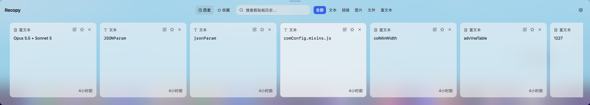

/01
Find it. Without retracing your steps.
Search your history for copied text, links, and filenames. Pick up where you left off.
That link from a minute ago. The text you copied earlier. Recopy keeps your clipboard history searchable, so you can find what you copied.
More than just text.
01 / TRY IT YOURSELF
Search, choose, and paste. A small taste of your everyday flow.
On a card: ← → to choose · Space to preview · Enter to paste · F to pin

02 / LESS FRICTION, MORE FLOW
A few small things you shouldn’t have to do twice.
Search your history for copied text, links, and filenames. Pick up where you left off.
Pin your go-to replies, addresses, and references. Add a note to make them easier to find next time.
Preview before you paste. Press Enter to put it into your active app and keep your train of thought.
Call it up, grab what you need, carry on. Position the panel at any edge of your screen.
CURRENT APP · CHINESE INTERFACE · FULL-RESOLUTION IMAGE
Keep your hands in the flow.Small moves. No interruptions.
03 / YOUR CLIPBOARD, YOUR SPACE
Keep what matters. Know where it stays.
Read our privacy policyClipboard history is stored on your device, not uploaded to the cloud.
Keep history by age, count, or without a limit. Pins are exempt from automatic cleanup.
Source-available under the PolyForm Noncommercial license.
Update checks and installer downloads connect to release servers.
04 / A LITTLE HELP, EVERY DAY
Keep text, images, and links in a searchable clipboard history.
Recopy is free to download. Its source is available under PolyForm Noncommercial; see the license for terms on use, modification, and redistribution.
Recopy supports macOS and Windows, with plain text, rich text, images, files, and links. Mac installers are available for Apple Silicon and Intel.
Folders and items exceeding your configured size limit are skipped. Your chosen retention policy also determines which history is kept.
Yes. Adjust the global shortcut, theme, language, panel position, and history retention in Settings.
No. The demo uses synthetic samples and pastes only into its on-page note. The page writes to your system clipboard only if you explicitly copy the Homebrew command.